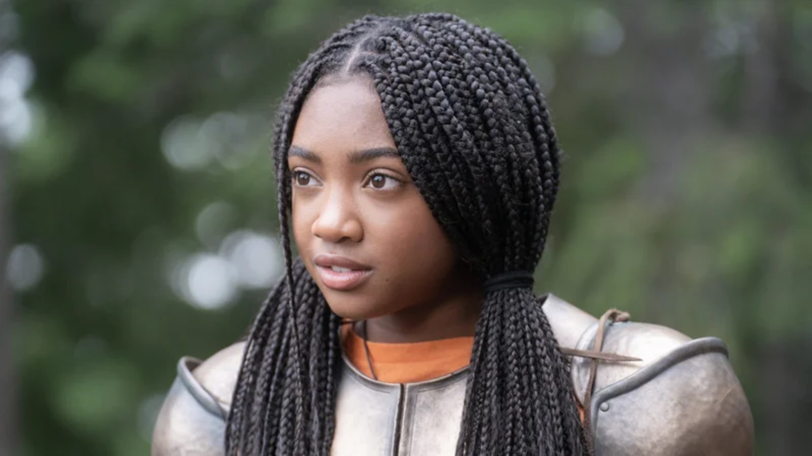
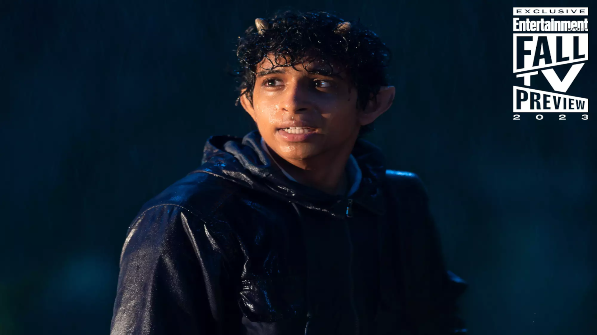
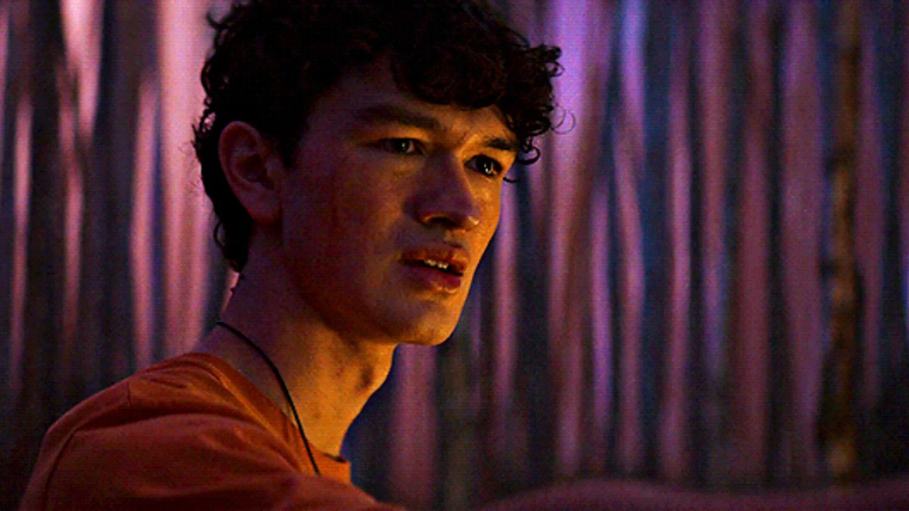
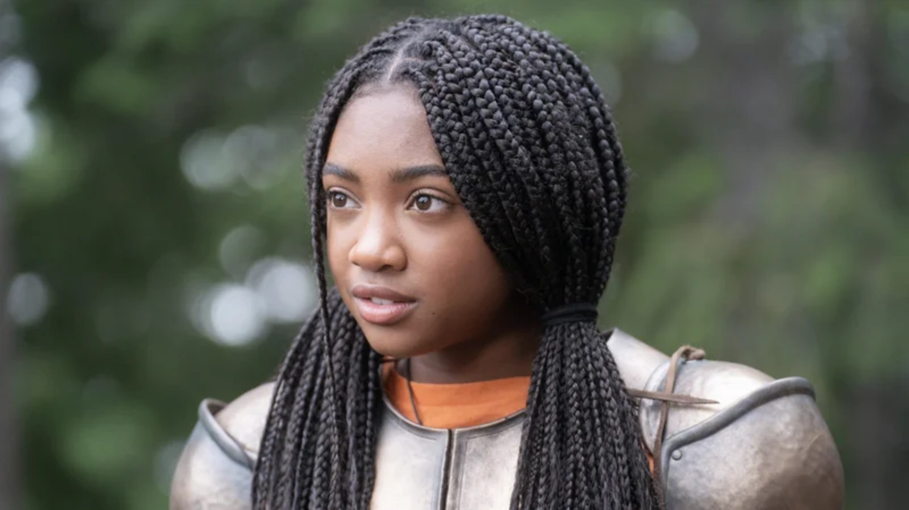
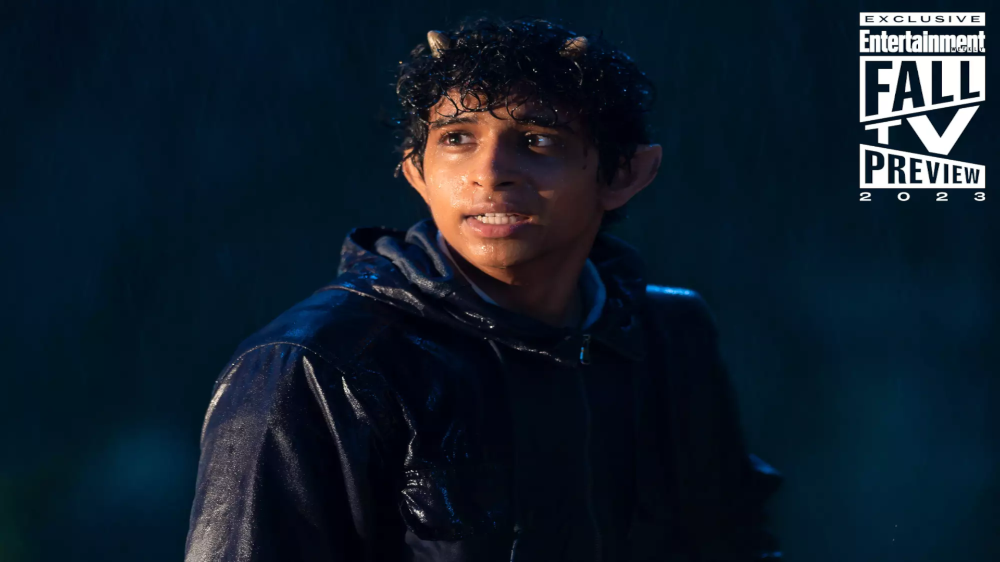
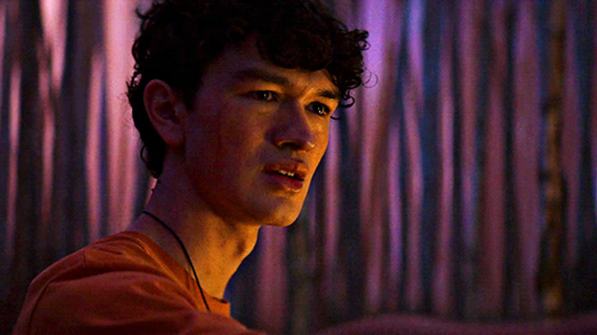

Percy Jackson
Percy Jackson é o filho do deus dos mares, Poseidon, por ser um filho de um deus muito forte, é caçadopelas caçadoras de Artémis, por isso, é escondido no mundo humano, posteriormente é revelado que é o filho de Poseidon, um dos grandes deuses.
Annabeth Chase
Ela é a filha da deusa Atena e a conselheira-chefe do seu chalé, além de uma grande estrategista, sendo assim muito respeitada por seus pares. Quando conhece Percy, ela não simpatiza de cara, mas os dois partem juntos - acompanhados por Grover - em sua primeira missão e forjam um laço bem forte.
Grover Underwood
Grover, não é um filho de um deus, um sátiro adolescente com o objetivo de guiar e proteger os semideuses em suas jornadas.
Luke Castellan
Filho de Hermes e posteriormente, o traidor, dito como aquele que roubou o raio de Zeus, quase causando uma guerra entre zeus e poseidon, de início é um personagem marcante, pela sua gentileza e simpatia com percy.